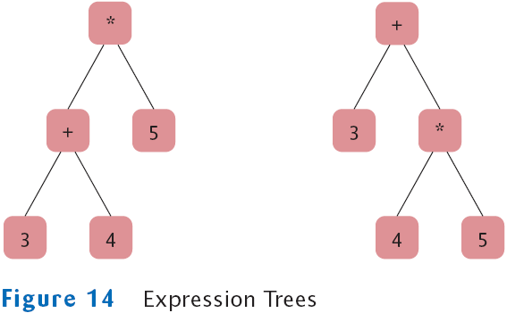

previous
|
start
|
next
Tree Traversal
Postorder traversal of an expression tree yields the instructions for evaluating the expression on a stack-based calculator

The first tree (
(3 + 4) * 5
) yields
3 4 + 5 *
Whereas the second tree (
3 + 4 * 5
) yields
3 4 5 * +
previous
|
start
|
next